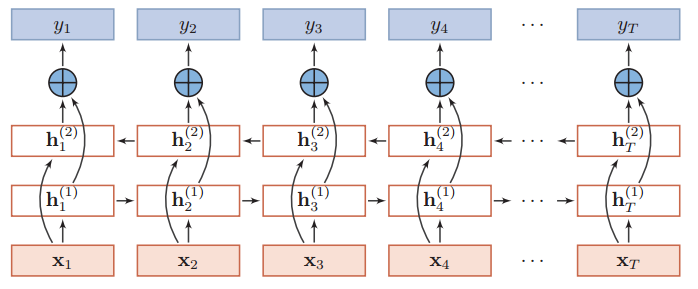

词向量系列（6）：动态词向量CoVe之ELMo
动态词向量（CoVe）是未来的发展趋势，本篇介绍ELMo~
静态词向量与动态词向量
无论是VSM、LSA还是skip-gram、CBOW所获得的词向量都是静态的，并没有考虑不同上下中词的不同语义。例如我们使用gensim训练好word2vec向量后，固定的词，不论该词所在的上下文，获得的输出向量都是一样的。
动态词向量（context vectors，CoVe），或上下文词向量，本文使用动态词向量一词。动态词向量的提出可以解决VSM、LSA还是skip-gram、CBOW无法处理关联上下的问题以及一词多义问题。
动态词向量，我个人认为其是NLP中未来的一个研究方向，因此，不排除以后会有更多这类文章分享。接下来继续介绍ELMo模型。
ELMo模型
ELMo，全称 Embeddings from Language Models，来自论文Deep contextualized word representations，从语言模型中获取 Embedding。比起word2vec等词向量模型，ELMo能够对单词的语法特征以及语义特征进行建模。同时，其动态特性能够让其适应不同的上下文，称为上下文相关词向量或者动态词向量。
ELMo 通过双向多层神经网络语言模型的隐向量的加权平均计算得到词的向量表示，因此该词的向量化随着词所在的上下文不同而不同。这个特点解决了word2vec等方法一直无法解决的问题：多义词。
ELMo的网络架构有别于其他的ngram单向语言模型，是一个Stacked bi-LSTM模型，以便学习双向特征，即上下文特征。
对于单向的语言模型，其目标函数有，
其旨在通过左侧词汇$[w_1, \dots, w_{i-1}]$预测当前词汇$w_i$，其中$\theta$是模型的参数，RNN类模型很适合对其建模。
而ELMo采用双向的LSTM网络来对语言模型建模，准确来说是两个单向的LSTM网络，其中一个正向建模，另外一个逆向建模，因此训练目标可以表示为，
双向的LSTM网络（图片来自nndl.github.io）为，

这里$x_i$是词$w_i$通过Embedding层的输出，可以看到两个LSTM网络是共享Embedding层的。$y_i$输出前通过softmax归一化，以表示每个时间步输出词的概率分布。
ELMo求词$w_i$的向量化由指定的第L层的输出向量$h_i^L$决定，通常是两个方向的输出的拼接，
这样的特征更全面地考虑上下文情况。
ELMo通过实验证明，不同网络层特征有语义和语法上的区别。L越小，所表示的特征越接近语法特征，L越大，所表示的特征越接近语义特征。
ELMo还有一种更general方法获取对应的词向量，即对所有层（一共2L+1层，L层bi-LSTM+一层Embedding）的加权平均，
$\gamma$是一个与任务相关的缩放因子。然后不同层的权重$s_i$是可以自动学习，权重可以通过softmax归一化。这种方法的高明之处是让具体任务来决定使用底层语法特征与高层语义特征的比例。
总结
ELMo优点：
对语法特征、语义特征建模，ELMo词向量是由双向神经网络语言模型的内部多层向量的线性加权组成
适应不同的上下文，ELMo词向量与传统的词向量（如：word2vec）不同。在ELMo中每个单词的词向量不再是固定的，而是单词所在的句子的函数，由单词所在的上下文决定
ELMo缺点：
- RNN网络架构无法并行
- RNN网络架构有长距离依赖问题
文本向量总结：
- 基于词共现概率论，word2vec、Glove、LSA
- n-gram subword，fastText
- 基于上下文，Cove
- 基于语言模型的动态词向量，ELMo、BERT、GPT
这一系列的文章所讨论的模型或方法，我们可以把它们五大类：
- 基于 BOW 模型，如 one-hot、TI-IDF、textrank 等
- 基于主题模型，如 LSA、pLSA、LDA 等
- 静态词向量（上下文独立），如 word2vec 工具（CBOW、skip-gram）、GloVe、FastText
- 词向量之外的思考，如Embedding原理、句向量、文档向量等
- 动态词向量（上下文相关），ELMo、Transformer、BERT 等
下表对比常用的词向量方法的对比，虽然还没有讲到BERT，但还是那出来作为对比，
| 编码方式 | 优点 | 缺点 |
|---|---|---|
| one-hot | 最简单的词向量化方式 | 维度灾难、语义鸿沟 |
| 随机映射 | 使用随机向量表示词，相对便捷 | 需要下游网络足够复杂 |
| tf-idf | 基于BOW，相对便捷通用 | BOW本身没有词序信息 |
| 主题模型LSA | 基于全局共现矩阵分解的方法，能够有效的利用全局的统计信息 | 在单词类比任务（如：国王 vs 王后 类比于男人 vs 女人）中表现相对较差 |
| word2vec | 基于局部上下文窗口的方法，在单词类比任务中表现较好 | 因为word2vec 在独立的局部上下文窗口上训练，因此难以利用单词的全局统计信息 |
| GloVe | 同时利用共现矩阵的全局信息和局部上下文信息 | |
| FastText | 考虑subword、ngrams，一定程度上缓解OOV | 需要监督数据，本质上还是BOW |
| ELMo | 动态词向量，考虑上下文 | ELMo本质上还是两个单向的LSTM的拼接 |
| BERT | 双向的动态词向量 | / |
word2vec、ELMo都是针对序列样本进行建模，而Graph Embedding则针对图进行建模，后续如果有需要再学习这方面内容。
参考
[1] Deep contextualized word representations
[2] Contextual Word Representations: A Contextual Introduction
转载请包括本文地址：https://allenwind.github.io/blog/9279
更多文章请参考：https://allenwind.github.io/blog/archives/